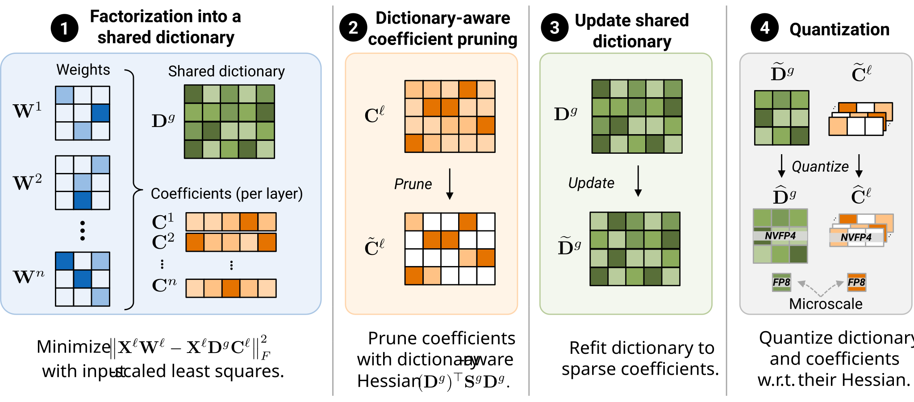
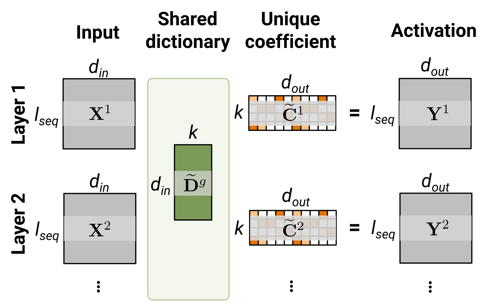
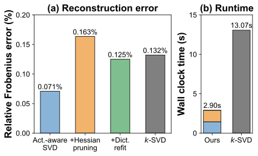
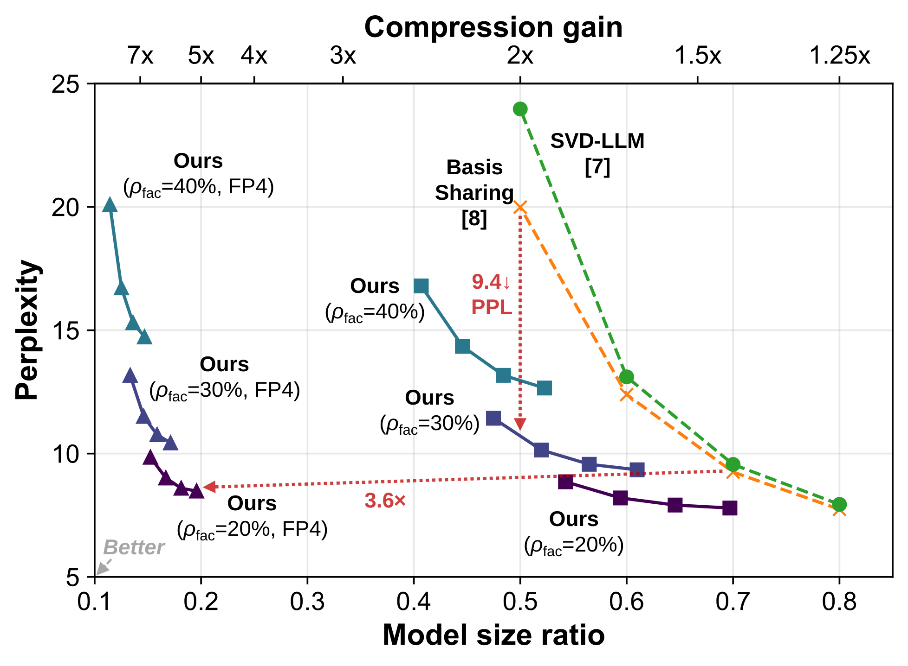
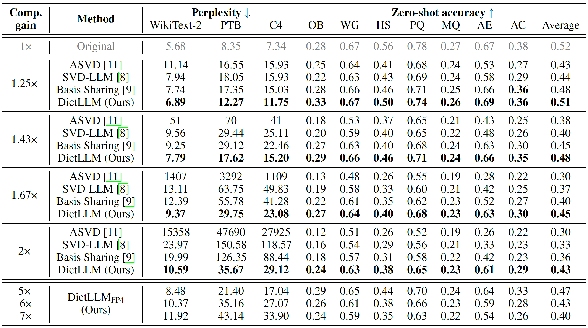
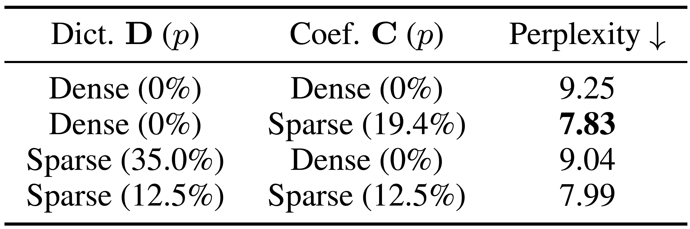
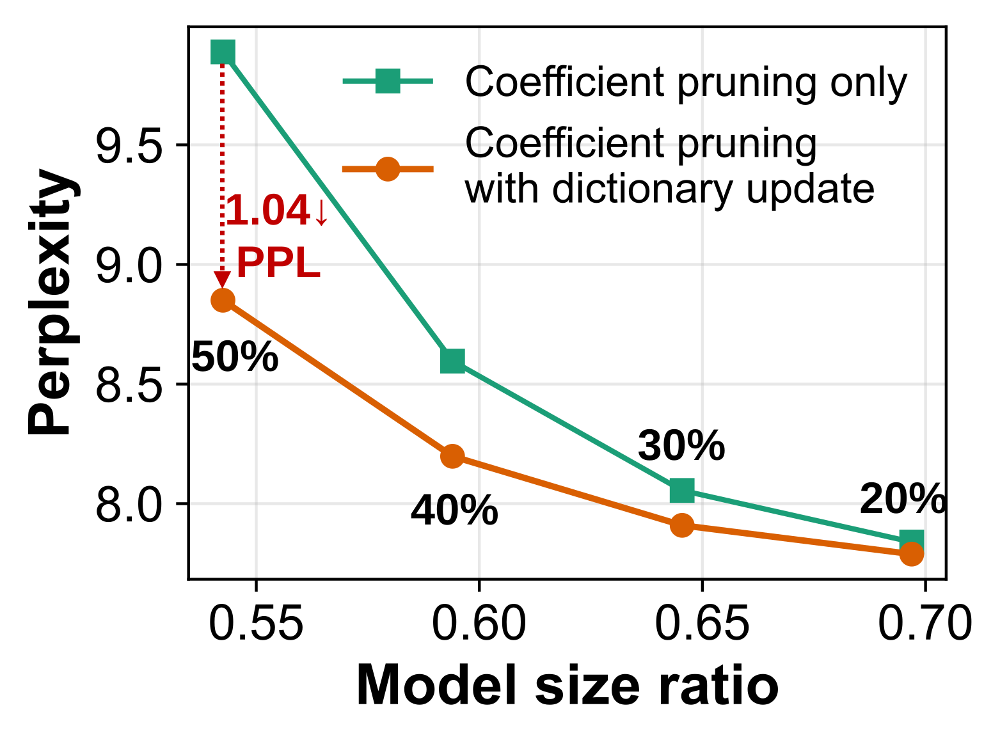

DictLLM represents an LLM as weights shared across layers plus sparse, layer-specific coefficients, exposing redundancy that conventional layer-by-layer compression does not exploit. Importantly, this representation can be derived directly from a pretrained model via post-training compression, without fine-tuning the model.
NeurIPS 2026
We propose DictLLM, a dictionary-based compression scheme in which weight matrices within grouped layers are decomposed into a shared dictionary and layer-specific sparse coefficients, directly obtained from a pre-trained model without further training. Specifically, we cast DictLLM as a four-step post-training optimization. First, we obtain shared dictionaries via singular value decomposition (SVD) of input-scaled weight matrices, amortizing rank across grouped layers; second, we sparsify the layer-specific coefficients to the target compression ratio using a dictionary-aware Hessian; and third, we refine the dictionaries given the resulting sparse coefficients. Finally, we aggressively quantize both components using factor-specific Hessian information: input covariance for the dictionaries and the dictionary-aware Hessian for the coefficients. The resulting representation reduces memory footprint by storing a single shared dictionary per layer group, along with sparse layer-specific coefficients.
DictLLM resolves the weight memory bottleneck by compressing transformer weights into a shareable dictionary. It compounds four compression steps. ❶ The first step factorizes input-scaled weight matrices of grouped layers into a shared dictionary and layer-specific coefficients. ❷ We then prune the layer-specific coefficients using a dictionary-aware Hessian. ❸ We refit the shared dictionary to the resulting sparse coefficients. ❹ We quantize both the dictionary and the coefficients into NVFP4 using input statistics for the dictionary and dictionary-aware Hessians for the coefficients. The resulting compressed representation enables efficient projections by transferring a small set of shared dictionaries.

Figure 1 - DictLLM: Dictionary-based compression method.
We first describe the shared-dictionary representation and the forward operation. For a layer group $g$ with layers $\ell \in g$ that share a dictionary, we define input dimension $d_\text{in}$, output dimension $d_\text{out}$, and dictionary size $k$. A shared dictionary $\widetilde{\mathbf{D}}^{g} \in \mathbb{R}^{d_\text{in} \times k}$ is reused by every layer in the group, while the coefficient matrix $\widetilde{\mathbf{C}}^{\ell} \in \mathbb{R}^{k \times d_\text{out}}$ of each layer is not shared.

Figure 2 - Dictionary-based forward operation.
We compare our method, consisting of activation-aware SVD, Hessian coefficient pruning, and post-pruning dictionary update, against k-SVD with an undercomplete dictionary on the first layer of LLaMA-7B query projection. k-SVD is an alternative to our sequential pipeline for learning a sparse dictionary representation from scratch. However, full sparse dictionary learning is expensive at the LLM scale because it requires repeated atom-wise and coefficient updates over a large number of weight columns.

Figure 3 - Dictionary-based forward operation.
We evaluate the trade-off between WikiText-2 perplexity and model size ratio in Figure 4. DictLLM achieves a 5.1× compression ratio on the original LLaMA model with only a 2.9-point increase in WikiText-2 perplexity, providing 3.6× higher compression than the state-of-the-art low-rank method. In addition, DictLLM reduces perplexity by 9.4 points compared to Basis Sharing with 2x compression on WikiText-2.

Figure 4 - Perplexity-model size trade-off. WikiText-2 perplexity of compressed LLaMA-7B across factorization ratios and coefficient sparsities. DictLLM factorizes weights at rate $\rho_{\mathrm{fac}}$ and then prunes layer-specific coefficients with 20%-50% sparsity. We also report their NVFP4 versions.
We report language modeling perplexity and zero-shot reasoning accuracy in Table 1. DictLLM consistently improves over low-rank baselines across compression ratios from 1.25× to 2×. For example, DictLLM achieves an average zero-shot accuracy of 0.43 at 2× compression, compared with 0.40 for Basis Sharing at 1.67× compression. We also report FP4-quantized variants, DictLLMFP4, at the bottom of Table 1. Notably, DictLLMFP4 achieves an average accuracy of 0.39 at 7× compression, outperforming Basis Sharing at 2× compression with 0.36 average accuracy.
Table 1 - Benchmark on language modeling and reasoning tasks. We measure perplexity on WikiText-2, Penn TreeBank (PTB), and C4, and zero-shot accuracy on OpenBookQA (OB), WinoGrande (WG), HellaSwag (HS), PIQA (PQ), MathQA (MQ), ARC-Easy (AE), and ARC-Challenge (AC).

Table 2 examines whether sparsity should be applied to the shared dictionary, the layer-specific coefficients, or both. We control the sparsity of the pruning target to reach a 30% compression ratio. The most interesting finding is that pruning the coefficients gives the lowest perplexity of all combinations. This suggests that the dictionary stores shared information that is reused across layers, whereas the coefficients contain more layer-specific redundancy.
Table 2 - Ablation of pruning target.

We ablate the effect of updating the dictionary after coefficient pruning (Figure 5). We keep the sparse coefficient matrices fixed and refit the shared dictionary across a coefficient sparsity range from 20% to 50%. This step improves the reconstruction induced by the fixed sparse codes without changing the sparsity pattern or model-size estimate. The interesting part is that perplexity reduction is higher at increased sparsity: 1.04 PPL at 50% sparsity, whereas 0.06 PPL at 20% sparsity.

Figure 5 - Ablation of dictionary update.
We present DictLLM, a post-training compression method that represents transformer weights with shared dictionary kernels and layer-specific sparse coefficients. DictLLM first recovers shared dictionaries through activation-aware factorization, then prunes the coefficients using a dictionary-aware Hessian that projects calibration covariance into coefficient space. We then refit the shared dictionary by using the resulting coefficients. We further apply NVFP4 quantization with Hessian-based error compensation to both dictionary and coefficient factors, reducing storage while maintaining the factorized structure. Comprehensive experiments show that DictLLM improves the perplexity-model size trade-off and preserves performance relative to state-of-the-art low-rank compression methods across language modeling and zero-shot reasoning benchmarks.
@inproceedings{park2026dictllm,
title={{DictLLM: Post-training Compression of Large Language Model with Dictionary Kernels}},
author={Park, Jinho and Chun, Se Young and Seok, Mingoo},
booktitle={Advances in Neural Information Processing Systems},
year={2026},
}